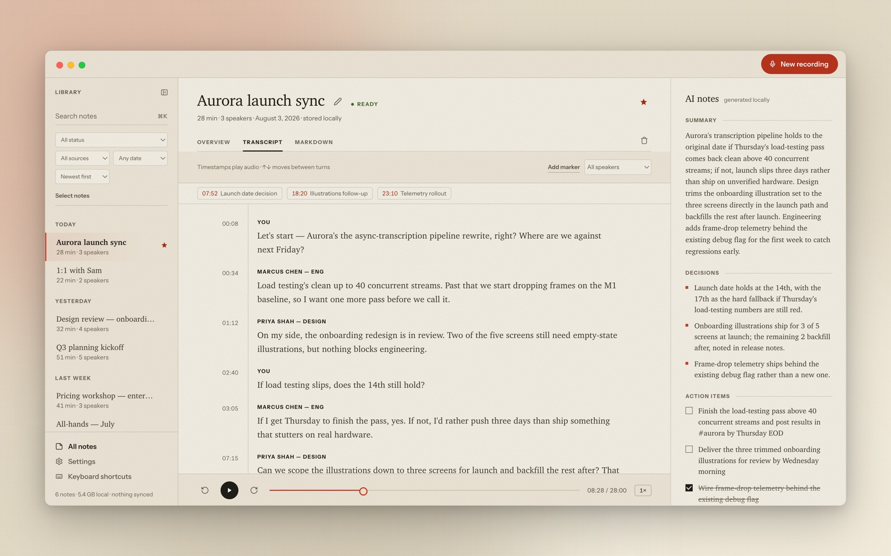
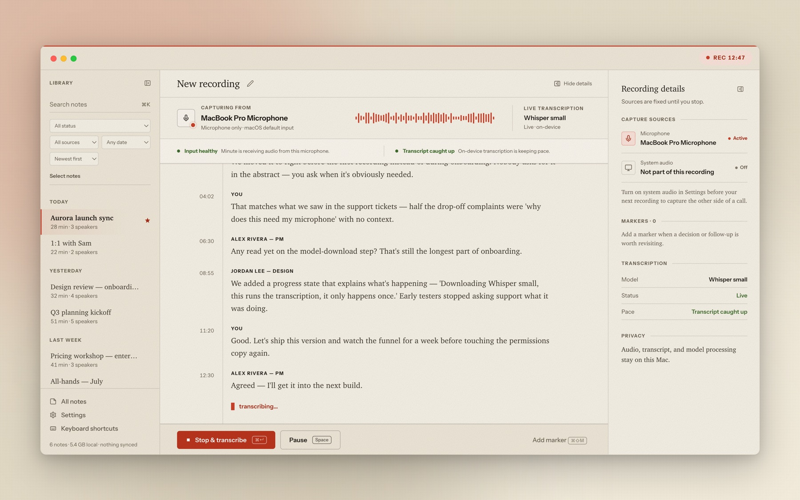
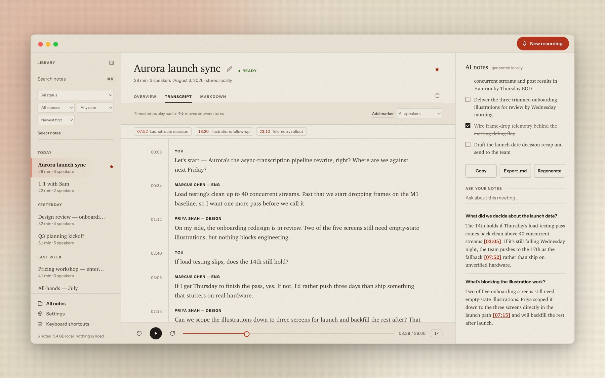
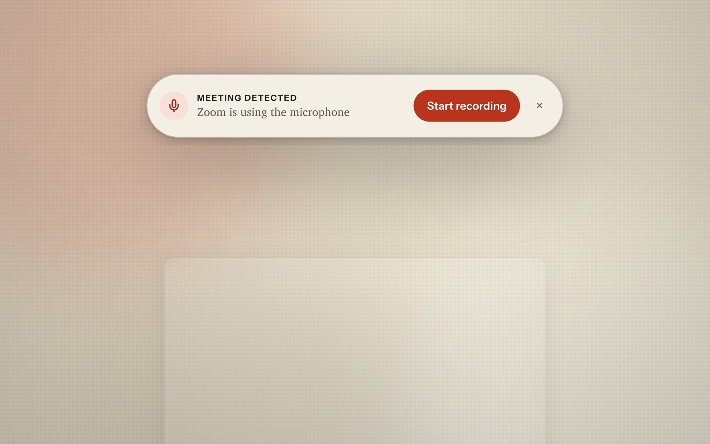
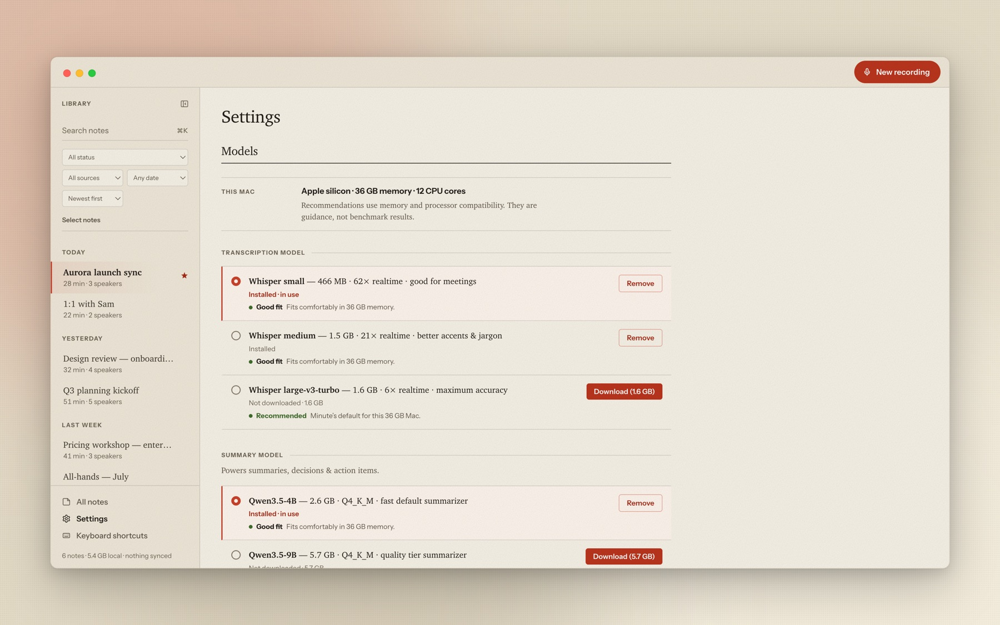
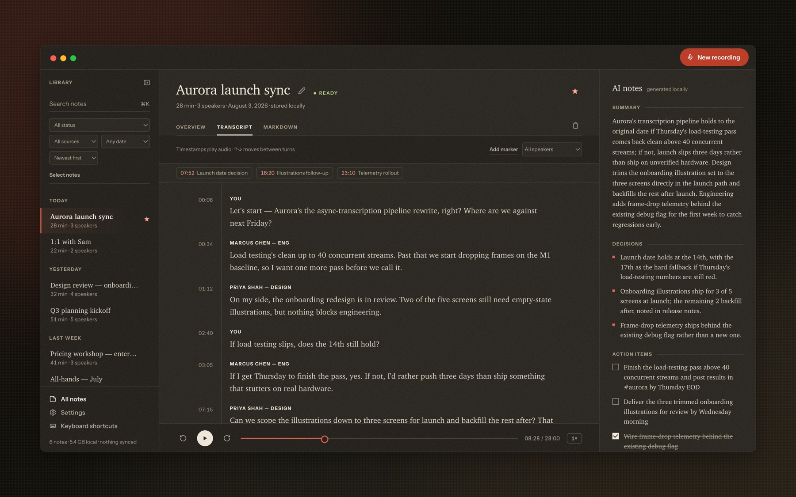

Meeting notes that never leave your Mac.
Minute records your meetings, transcribes them as you speak, labels who said what, and writes the summary, decisions, and action items. The models run on your Mac — not somebody else's server.
Version 1.13.0 · signed & notarized by Apple · all releases
Free · Open source, MIT · macOS · No account

Everything the app sends over the network
That's the whole list. Turn off Wi-Fi and everything still works. The code is open — you can check.
Transcribed as you speak, every speaker named
On-device Whisper keeps pace with the conversation, and local diarization works out who said what. Minute can remember the voices you name and write "Sarah" into the next transcript by itself — with an Undo. Timestamps play the audio.

Ask your notes, get answers with citations
Ask any meeting a question. Answers cite the second it was said, and clicking a citation jumps there.

It notices when a meeting starts — and ends
When Zoom, Teams, or a browser call uses your mic, a quiet pill offers to record. When the call ends — even if the app stays open — or the room goes quiet, Minute offers to stop and transcribe. It watches device and process state, never audio. Detection is off by default.

Pick your models
Choose the Whisper size and summary model that fit your Mac's memory. Offline after the download.

Native, not wrapped
A Rust app with whisper.cpp and llama.cpp compiled in, running on Metal. No Electron, no Python runtime. Notes are plain text and WAV in a folder you own. Signed and notarized by Apple. MIT licensed.
